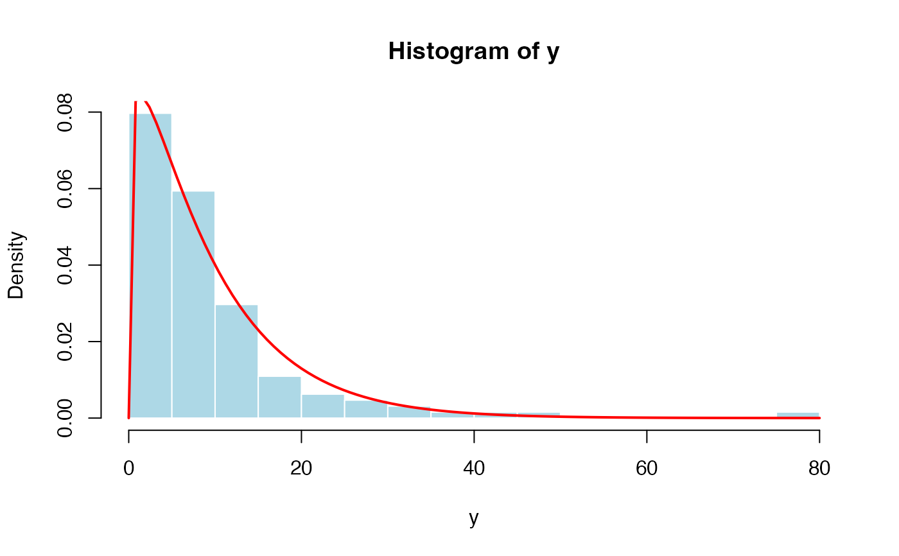

The Generalized Lindley Type II (GLIN) family for fitting positive continuous lifetime data within the GAMLSS framework.
Value
Returns a gamlss.family object which can be used to fit a
GLIN distribution in the gamlss() function.
Details
The Generalized Lindley Type II distribution with parameters
mu and sigma has probability density function
\( f(x|\mu,\sigma)= \frac{\mu^2}{\mu+1} \left( 1+\frac{\mu^{\sigma-2}x^{\sigma-1}} {\Gamma(\sigma)} \right) e^{-\mu x}, \)
for \(x>0\), \(\mu>0\) and \(\sigma>0\).
The distribution is a two-parameter extension of the classical Lindley distribution and belongs to the class of finite mixtures involving exponential and gamma components. It provides additional flexibility for modeling positively skewed lifetime data.
The original parameters of the distribution are denoted by \(\theta\) and \(\alpha\). In the GAMLSS implementation, they are re-parameterized as \(\mu=\theta\) and \(\sigma=\alpha\).
The \(r\)-th raw moment is given by
\( E(X^r)= \frac{1} {\mu^r(\mu+1)} \left[ \mu\Gamma(r+1) + \frac{\Gamma(r+\sigma)} {\Gamma(\sigma)} \right]. \)
In particular, the mean is
\( E(X)= \frac{\mu+\sigma} {\mu(\mu+1)}. \)
and the variance is
\( Var(X)= \frac{\mu^2 + \mu(\sigma^2 - \sigma + 2) + \sigma} {\mu^2(\mu + 1)^2}. \)
The GLIN distribution has been proposed for modeling lifetime and survival data and has shown greater flexibility than the classical Lindley and Exponential distributions in several applications.
References
Ekhosuehi, N., Opone, F., & Odobaire, F. (2018). A New Generalized Two Parameter Lindley Distribution. Journal of the Nigerian Statistical Association, 30, 547-566.
Author
Sofia Cadavid Rueda, socadavidr@unal.edu.co
Examples
# Example 1
# Generating some random values with
# known mu and sigma
set.seed(1234)
y <- rGLIN(n=500, mu=0.75, sigma=1.3)
# Fitting the model
require(gamlss)
mod1 <- gamlss(y~1, sigma.fo=~1, family=GLIN)
#> GAMLSS-RS iteration 1: Global Deviance = 1467.126
# Extracting the fitted values for mu and sigma
# using the inverse link function
exp(coef(mod1, what="mu"))
#> (Intercept)
#> 0.7369872
exp(coef(mod1, what="sigma"))
#> (Intercept)
#> 1.31815
# Example 2
# Generating random values for a regression model
# A function to simulate a data set with Y as GLIN
gendat <- function(n) {
x1 <- runif(n)
x2 <- runif(n)
mu <- exp(1.45 - 3 * x1) # Approx 0.95
sigma <- exp(2 - 1.5 * x2) # Approx 3.50
y <- rGLIN(n=n, mu=mu, sigma=sigma)
data.frame(y=y, x1=x1, x2=x2)
}
set.seed(1234)
dat <- gendat(n=1000)
mod2 <- gamlss(y~x1, sigma.fo=~x2,
family=GLIN, data=dat,
control=gamlss.control(n.cyc=50, trace=FALSE))
summary(mod2)
#> Warning: summary: vcov has failed, option qr is used instead
#> ******************************************************************
#> Family: c("GLIN", "New Generalized Two Parameter Lindley")
#>
#> Call: gamlss(formula = y ~ x1, sigma.formula = ~x2, family = GLIN,
#> data = dat, control = gamlss.control(n.cyc = 50, trace = FALSE))
#>
#> Fitting method: RS()
#>
#> ------------------------------------------------------------------
#> Mu link function: log
#> Mu Coefficients:
#> Estimate Std. Error t value Pr(>|t|)
#> (Intercept) 1.38939 0.05053 27.50 <2e-16 ***
#> x1 -2.98009 0.08072 -36.92 <2e-16 ***
#> ---
#> Signif. codes: 0 ‘***’ 0.001 ‘**’ 0.01 ‘*’ 0.05 ‘.’ 0.1 ‘ ’ 1
#>
#> ------------------------------------------------------------------
#> Sigma link function: log
#> Sigma Coefficients:
#> Estimate Std. Error t value Pr(>|t|)
#> (Intercept) 1.97030 0.04410 44.68 <2e-16 ***
#> x2 -1.54586 0.09934 -15.56 <2e-16 ***
#> ---
#> Signif. codes: 0 ‘***’ 0.001 ‘**’ 0.01 ‘*’ 0.05 ‘.’ 0.1 ‘ ’ 1
#>
#> ------------------------------------------------------------------
#> No. of observations in the fit: 1000
#> Degrees of Freedom for the fit: 4
#> Residual Deg. of Freedom: 996
#> at cycle: 40
#>
#> Global Deviance: 3729.469
#> AIC: 3737.469
#> SBC: 3757.1
#> ******************************************************************
# Example 3
# Remission times (in months) of 128 bladder cancer patients
# Taken from Lee and Wang (2003)
# Ekhosuehi et al. (2018) Table 4
y <- c(0.08, 2.09, 3.48, 4.87, 6.94, 8.66, 13.11, 23.63,
0.20, 2.23, 3.52, 4.98, 6.97, 9.02, 13.29, 0.40,
2.26, 3.57, 5.06, 7.09, 9.22, 13.80, 25.74, 0.50,
2.46, 3.64, 5.09, 7.26, 9.47, 14.24, 25.82, 0.51,
2.54, 3.70, 5.17, 7.28, 9.74, 14.76, 26.31, 0.81,
2.62, 3.82, 5.32, 7.32, 10.06, 14.77, 32.15, 2.64,
3.88, 5.32, 7.39, 10.34, 14.83, 34.26, 0.90, 2.69,
4.18, 5.34, 7.59, 10.66, 15.96, 36.66, 1.05, 2.69,
4.23, 5.41, 7.62, 10.75, 16.62, 43.01, 1.19, 2.75,
4.26, 5.41, 7.63, 17.12, 46.12, 1.26, 2.83, 4.33,
5.49, 7.66, 11.25, 17.14, 79.05, 1.35, 2.87, 5.62,
7.87, 11.64, 17.36, 1.40, 3.02, 4.34, 5.71, 7.93,
11.79, 18.10, 1.46, 4.40, 5.85, 8.26, 11.98, 19.13,
1.76, 3.25, 4.50, 6.25, 8.37, 12.02, 2.02, 3.31,
4.51, 6.54, 8.53, 12.03, 20.28, 2.02, 3.36, 6.76,
12.07, 21.73, 2.07, 3.36, 6.93, 8.65, 12.63, 22.69)
require(gamlss)
mod3 <- gamlss(y ~ 1, sigma.fo = ~1, family = GLIN)
#> GAMLSS-RS iteration 1: Global Deviance = 826.8288
# Extracting the fitted values for mu and sigma
# using the inverse link function
exp(coef(mod3, what="mu"))
#> (Intercept)
#> 0.1247079
exp(coef(mod3, what="sigma"))
#> (Intercept)
#> 1.189219
# Comparing the empirical histogram with the estimated density
hist(y, breaks=15, freq=FALSE,
xlab="y", col="lightblue", border="white")
curve(dGLIN(x, mu=0.1247079, sigma=1.189219),
add=TRUE, col="red", lwd=2)
